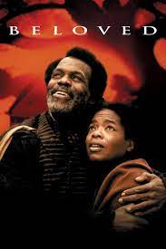

|  |
Beloved
By Toni Morrison
Description
Toni Morrison’s 1987 spiritual and haunting novel Beloved tells the story of an escaped slave named Sethe who has fled to Cincinnati, Ohio, in the year 1873. The novel investigates the trauma of slavery even after freedom has been gained, depicting Sethe’s guilt and emotional pain after having killed her own child, whom she named Beloved, to keep her from living life as a slave. A spectral figure appears in the lives of the characters and goes by the same name as the child, embodying the family’s anguish and hardship and making their feelings and past unavoidable. |